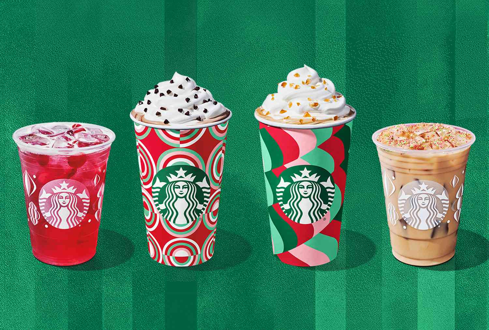

Starbucks Recipes
Starbucks Recipes
About Us
Starbucks drinks are delicious, however they can be expensive and they require you to go out to get them.
This site will show you how to make a bunch of delicious Starbucks-Inspired drinks at home, much cheaper than getting them at the store!
Keep reading to find out more!